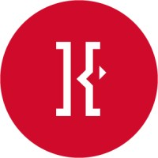
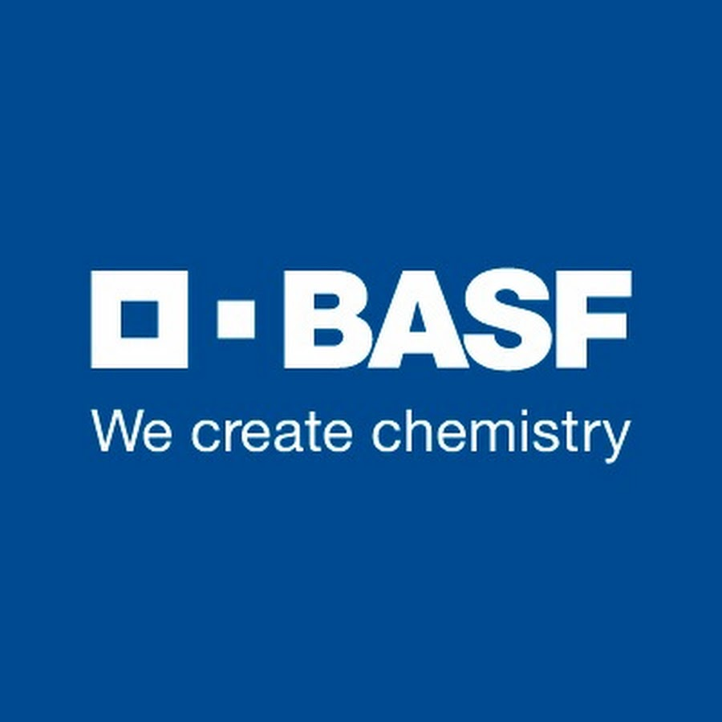

Jordan Fulawka's 2nd Work Term Report

Abstract

As my 8 month placement at Kenna has come to a close, in this report I
will be going in-depth about the second half of my time there. I hope to
explain not only my responsibilities during this second term, but more
so the evolution of my experience at Kenna and what has changed as I
entered the latter half of my co-op placement. I’d like to give an
overview of my contributions and the impact I had on both my team and
others, and provide examples of the outcomes of my efforts. Additionally
I’d like to illustrate how the skills and knowledge I’ve acquired there
will benefit me in future endeavours, whether in an academic setting or
future employment.
Information about Kenna

Kenna is a dynamic marketing solutions company known for its extensive
collaboration with BASF, a prominent player in the agricultural industry.
However, Kenna's influence extends far beyond this partnership,
encompassing a broad spectrum of services. Some of the things they offer
include insights and analytics, data management, and cultivating a strong
and vibrant brand experience. Their core mission is to craft a unified and
streamlined experience that is tailored specifically for each of their
clientele to meet their exact needs. A major focal point for Kenna lies in
building loyal customer relationships, which is supported by their motto,
"customer first thinking." As such a diverse organization, Kenna thrives
on its ability to cater to a wide range of needs across several
industries.
 Kenna has many teams that all pertain to different parts of computer
science. The team that I am in, which is data reporting, focuses on things
like databases, SQL, and data analysis. I also work with and QA many of
our reports which has also helped me understand more about web development
fundamentals and the practices it uses. There is also an application
development team, where they work on developing these reports and other
tools that any clients may require. This is the team I hope to join during
my next co-op placement.
Kenna has many teams that all pertain to different parts of computer
science. The team that I am in, which is data reporting, focuses on things
like databases, SQL, and data analysis. I also work with and QA many of
our reports which has also helped me understand more about web development
fundamentals and the practices it uses. There is also an application
development team, where they work on developing these reports and other
tools that any clients may require. This is the team I hope to join during
my next co-op placement.
 Some interesting facts about Kenna is that they have worked with many
brands in many different industries since starting in 1985, when under the
name "AppliCan Marketing". Some of these brands are Mars, Zeneca, Colgate,
Rogers, Coca Cola, Molson, and McCormicks. They initially focused on sales
reporting and store merchandising, before switching to a more digital
approach of marketing just before the year 2000.
Some interesting facts about Kenna is that they have worked with many
brands in many different industries since starting in 1985, when under the
name "AppliCan Marketing". Some of these brands are Mars, Zeneca, Colgate,
Rogers, Coca Cola, Molson, and McCormicks. They initially focused on sales
reporting and store merchandising, before switching to a more digital
approach of marketing just before the year 2000.
Goals
My goals for this term are heavily built on those of last term. They are:
- Reach an advanced level in SQL
- Improve collaboration, communication and accountability
- Improve critical-thinking and problem solving skills
I’d like to touch on the first goal, reaching an advanced level in SQL. I
used SQL a lot during my time at Kenna. My goal last term was to reach an
intermediate level, which I felt I had completed. During this term I
wanted to see if I could push myself even further, and reach an advanced
level. I felt this was an appropriate goal as using SQL was a part of my
day to day job. It was hard to quantify this goal as an “advanced level”
is a bit arbitrary, but I wanted to be able to write SQL scripts for my
job without any assistance and also go beyond just the concepts used at
work. As I had exhausted the SQL resources offered from Kenna, I had to
look elsewhere. I used online courses and resources that filled in any
gaps I was missing, as well as learnt many new functionalities that I
didn’t even know were possible. Things like string and date manipulations,
recursion, and pivoting just to name a few. By the end of the term I can
confidently say I have reached an advanced level, but I know there is
still a lot out there to learn. I look forward to learning more about SQL
and seeing the heights I can reach with it.
My second goal focused on working with others and accountability. During
my second term, I had a lot of responsibilities. I had data pulls, report
builds, as well as several other ongoing projects that I needed to keep
track of. During my first term, I felt it was difficult to reach out to
others if I needed help or to ask a question as I was always worried about
bothering them. But during my second term I can say this was no longer the
case. I felt comfortable reaching out to anyone at Kenna to ask a question
or even set up meetings if necessary. As my responsibilities expanded, so
did my network. By the end of my term I had spoken with developers,
campaign leads, as well as others from the AgSolutions or data management
teams. This ensured I got the information I needed as quickly as possible
as opposed to relying on my manager to ask and then relay that information
to me. My accountability is also on the same level. As I mentioned there
were a lot of things on my plate this term, since I also got handed over
extra tasks when the previous co-op left. But, I used time management
skills such as using to-do lists and meticulously planning out my day to
ensure everything got taken care of. These are very important skills so
I’m very glad I had so many chances to consistently work on these as
they’ll benefit me greatly in future employment. I would say this goal is
completed.
 Finally, I also wanted to improve my problem-solving and critical
thinking. Since my workload at Kenna was so diverse I got to do lots of
problem solving for lots of different situations. Sometimes that would be
working on a SQL query, manipulating data in excel, or thinking of new
ways to demonstrate and show data in a report build. The opportunities for
critical thinking during this work term were endless, which I especially
liked since my work never felt monotonous or boring. I have definitely
seen improvements since the end of my first term. Being exposed to more of
the inner workings of the company has allowed me to expand my knowledge
and then apply this information to other problems I’m dealing with. For
example, I was tasked with rewriting a script to QA a report. While I was
doing this I had to look into other scripts that were already written and
during this process I learnt a ton of methods about how to write simpler
queries for things I had struggled with before. This kind of thing
happened all the time and really gave me new tools about how to think
critically. I have definitely seen improvements in how I approached and
solved problems I was unfamiliar with since the start of my term, and I
know I’ll be able to apply these same principles to other situations as
well.
Finally, I also wanted to improve my problem-solving and critical
thinking. Since my workload at Kenna was so diverse I got to do lots of
problem solving for lots of different situations. Sometimes that would be
working on a SQL query, manipulating data in excel, or thinking of new
ways to demonstrate and show data in a report build. The opportunities for
critical thinking during this work term were endless, which I especially
liked since my work never felt monotonous or boring. I have definitely
seen improvements since the end of my first term. Being exposed to more of
the inner workings of the company has allowed me to expand my knowledge
and then apply this information to other problems I’m dealing with. For
example, I was tasked with rewriting a script to QA a report. While I was
doing this I had to look into other scripts that were already written and
during this process I learnt a ton of methods about how to write simpler
queries for things I had struggled with before. This kind of thing
happened all the time and really gave me new tools about how to think
critically. I have definitely seen improvements in how I approached and
solved problems I was unfamiliar with since the start of my term, and I
know I’ll be able to apply these same principles to other situations as
well.
I feel like I have gotten as close as I can to completing these goals
during my work term. This placement at Kenna has really helped me grow as
a person and gain all of the skills and practices that you can only get
through real world experiences. I look forward to seeing how I’m able to
apply what I’ve learnt here to other things in my life.
My Role at Kenna
My job title at Kenna was a data reporting assistant. I had a couple
primary duties, one of which was dealing with data requests that came in.
Several times a day, a request would come in from one of our stakeholders
for a specific data set. Usually, this request would entail a list of
customers who fulfilled some sort of criteria, whether that be about
sales, location, campaigns they’re involved in, etc.. It was my
responsibility to understand this request, and ensure it makes sense. If
anything seemed off I would reach back out to the stakeholder for
clarification. Once I felt confident in the request, the developers on the
team would pull this data from the backend. It was then again my job to QA
this data they pulled. This was usually done by also pulling the data
myself, or checking it against the front-end reports that BASF offers. I’d
then format the data nicely in a spreadsheet, and send it off to a
coworker for a less-extensive second QA. Once confirmed as correct, it
would be sent back to the stakeholder.
I was also responsible for working on our report layouts. As mentioned,
BASF has an extensive array of reports that display important information
to our stakeholders. Some data is more pertinent than others, and needs to
be looked at more often and should update perpetually. This is why some
data is chosen to be published as a report instead of just a one-time data
pull. There is a process for building each report that goes through
checking what kind of data the stakeholder would like on the report,
building the layout, creating the BRD document, and conversing with devs
throughout the build process. I spent much more time doing this in my
second term than my first. It is also my job to QA said reports, not only
the ones I’ve built but others as well. This process is similar to the
data pull QA process where I check the data on the reports against other
reports, as well as what I’m able to pull from the backend.
During my second term, I was also assigned several special tasks to work
on. One of these was writing the entire QA script for a report. Usually
when QAing a report, we pull some pieces of data from the backend combined
with information from the front end, but in this case I was responsible
for writing the entire QA script that people would reference in the
future. This ended up being a very tough task that was something that
really accelerated my advanced SQL goal as I learned a lot about how to
start a script from scratch. I was also tasked with doing interviews for
the next co-op which was a very insightful experience. I learned about
what goes on behind the scenes at interviews and how each candidate is
evaluated, which is something I think is very valuable. I was also given
the responsibility for auditing the companies definition file, where I
checked each reports definition file with the company’s master file and
noted any differences. There were many other things as well but the thing
I appreciated most was that many of the tasks given to me specifically
tailored to my goals and interests.
Conclusion
I hope this report has shed some light on my experiences with Kenna and
the impact they have had on me both personally and professionally during
my short time here. I'd like to quickly review the most important parts of
this report:
Kenna is a marketing solutions company that works primarily with BASF to
deliver a wide variety of services to help improve both the internal
workings of the company, as well as the external customer experience. I
work on the data reporting team, where I work on delivering data to
stakeholders who ask for it, as well as ensuring this data is accurate and
up to date.
The goals I set out during my second term at Kenna were to reach an
advanced SQL level, improve my ability to communicate and collaborate
effectively, and enhance my problem-solving and analytical skills. All
three of which I believe to have made big steps towards and have no doubt
will continue to improve as I embark on the rest of my future co-ops and
academic pursuits. All in all, my placement at Kenna has been a big
success and I couldn’t have asked for a better first co-op.
Thanks for reading!
Acknowledgment
This is my supervisor Sumit Singh. He is a senior data analyst and account
executive, and has been with Kenna for around four years.
Sumit was the person I would go to with any day-to-day inquiries I had,
and would be the primary person assisting me with any tasks I was given.
But, the reason I want to give Sumit a special shout-out was because since
joining kenna he knew I was interested in joining the development team.
So, he went out of his way to tell the development lead I was interested,
and even vouched for me. This lead to them reaching out and even offering
me the position I was hoping to get for my summer co-op term. And for that
I am very grateful!